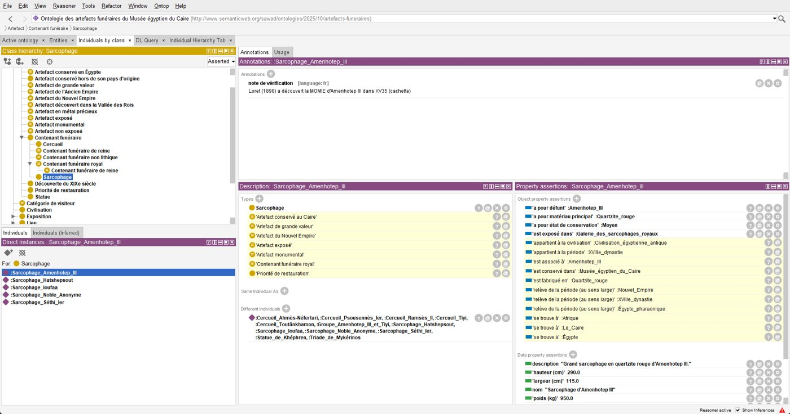

Lire les monogrammes des sceaux byzantins
Pipeline détection + classification de caractères grecs : mAP@50 0,778, 96,7 % d'exactitude. Publication DH2026.
PyTorch · YOLOv8 · ResNet18 · ViT
Du terrain linguistique à l'ingénierie du langage : des enquêtes sociolinguistiques de licence aux modèles d'apprentissage profond du master, le même intérêt pour la façon dont le langage se donne à lire, aux humains comme aux machines.
Pipeline détection + classification de caractères grecs : mAP@50 0,778, 96,7 % d'exactitude. Publication DH2026.
Audit du corpus (80 % de doublons), perte pondérée, seuil ajusté : F1 0,83, précision 0,79, rappel 0,88.

Application web pédagogique : 7 parcours, 143 questions, laboratoire interactif, Python dans le navigateur.
Fusion de données sismiques et de signaux audio : concaténation, stacking, voting.

OWL 2 + 6 règles SWRL : le raisonneur date, classe et localise les objets.

Recherche par le sens : plongements de phrases et similarité cosinus exacte.
Licence Sciences du Langage, Université de Franche-Comté (aujourd'hui Université Marie & Louis Pasteur), Besançon.